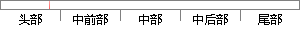

M4-M0为模式选择位，决定处理器工作于哪种模式。
片段位置图

相似结果
相似片段：这些位的值决定处理器的工作模式.如表3.4。表3....为了知道特定网卡型号使用的是哪种芯片组,可以参考...发送或者接受的模式选择等,这些寄存器是我们需要特别...
| 标题 | 《基于ARM9的无线网络语音传输的设计与实现》 |
| 对比库 | 中国学位论文全文数据库 |
| 作者 | 鞠浩 |
| 机构 | 南开大学 |
| 分类 | 通信与信息系统 |
| 年份 | 2006 |
| 相似率 | 75% （轻度抄袭） |
※ 片段修改建议 ※
近似词参考：- 哪种：哪一种 哪类
- 工作：事情
- 决定：决议 决意 抉择
系统自动生成语句： M4-M0为模式选择位，决议处理器事情于哪一种模式。
注：本片段修改建议为系统自动生成，仅供参考。